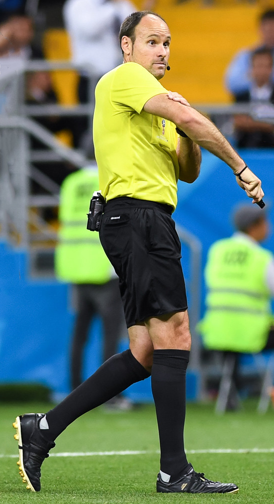

¿Por qué un top 5?
Una de las formas en las que entender nuestro mundo es mediante el clasismo,o lo que es lo mismo los top 5.
Veremos los siguientes, ordenados desde el top 5 al top1:
- Top 5 sillas para bodas
- Top 5 árbitros de la liga Santander
- Top 5 marcas de lápiz labial
- Top 5 huggy wuggy captados en cámara
- Top 5 top cincos

Top 5
Top 5 sillas para bodas
Todo elmundo sabe que una buena silla equivale a una buena boda,por ello las hemos ordenado en un top en orden.
Veremos los siguientes, ordenados desde el top 5 al top1:
- Top 5:Silla Tiffany
Nacida en Italia en el S. XIX es una de las sillas clásicas por excelencia, aunque moderna a la vez, que destaca por su versatilidad,
ya que la hemos usado con éxito tanto en interiores como en exteriores, tanto de día como de noche, gracias a su amplia variedad de colores. - Top 4:Silla Crossback
Se trata de una silla de madera con el respaldo cruzado, como su nombre indica, que destila sencillez y elegancia. Son ideales para
ceremonias, cócteles y cenas. Y nos encanta como funcionan con celebraciones rústicas, vintage y bohemias. - Top 3:Sillas de forja Vintage
Una de las sillas más románticas de todas, es una silla que se integra fabulosamente en las cenas exteriores, en jardines o terrazas,
ya que combina a la perfección con la naturaleza. - Top 2:Silla Napoleón
Una de las sillas más de moda entre los novios de Tot Hosteleria. Una silla que se adapta a cualquier tipo de espacio, ya que su personalidad clásica,
proveniente de la Francia del siglo XVIII, habla por sí sola. - Top 1:Avant Garde
Gracias a su solidez y resistencia, es una silla ideal para bodas de exterior. La sencillez y autenticidad que transmite hace que sea una silla que
funcione a las mil maravillas en bodas informales y rústicas.
Top 4
Top 5 árbitros de la liga Santander
Es bien sabido que los árbitros tienen un gusto especialpor los tops, por lo tanto los hemos ordenado en uno.
Veremos los siguientes, ordenados desde el top 5 al top1:
- Top 5:Ortiz Arias
Árbitro de la FIFA que expulsó a Cristiano Ronaldo por besarle, parece que no le gustó el beso ya que fue insta roja. - Top 4:Muñiz Ruiz
Este árbitro gallego tiene una gran desazón romántica típica del modernismo. Si haces una chilena te saca amarilla. - Top 3:Iglesias Villanueva
Es el peor arbitro de la primera división aunque lo pongamos en el top tres, porque es muy bromista. También gallego - Top 2:Pizarro Gómez
Es un árbitro clásico de la primera división y ha expulsado a Sergio Ramos 30 veces. Como se pasa tete. - Top 1:Mateo la Hoz
Es el mejor árbitro porque hace bailes del tiktok y apareció en el Hormiguero. Que éxito tiene entre los pubertos.

Top 3
Top 5 marcas de lápiz labial valoradas por las usuarias
Uno de nuestros imprescindibles de maquillaje es sin duda alguna la barra de labios. Sí, esa que llevamos en todo neceser, a ser posible dos o tres labiales en cada uno de los dos o tres neceseres que solemos tener (bolso, baño, habitación…etc.)os traemos la lista con las 5 marcas de labiales mejor valoradas por las usuarias.
Veremos los siguientes, ordenados desde el top 5 al top1:
- Top 5:Labiales MAC
Es decir MAC y queda todo dicho. Pocas veces como esta, una firma cosmética habla tan bien de sus productos. Los labiales MAC son bastante recomendados por las usuarias. - Top 4:Labiales NARS
Nars es otra firma cosmética muy conocida por su maquillaje, sobre todo por los coloretes o ‘blushes’, maquillaje facial fluido o labiales. Se puede comparar en cuanto a calidad y diseño a los labiales de MAC: casi mismo rango de precio, mismo ‘packaging’ en negro por lo general, etc. - Top 3:Labiales NYX
Esta firma existe desde hace bastante tiempo pero es ahora cuando está pegando más fuerte que nunca. De la firma Nyx podría recomendar desde sombras o paletas de ojos hasta delineadores de labios pasando como no por labiales. - Top 2:Labiales Nablas
Es una firma poco conocida pero que presenta muchas ventajas:Son de acabado semi-mate, perfecto para aquellas que dudan entre brillos y mates. - Top 1:Labiales H&M
H&M se ha puesto las pilas en cuanto a productos cosméticos se refiere y últimamente están sacando cositas de buena calidad y a un precio bastante asequible.
Top 2
Top 5 huggy wuggy captados en camara
Todo elmundosabe que los huggy wuggy son criaturas espeluznantes.Si ves a alguno de estos 5, no dudes en correr...¡CORRE!
Veremos los siguientes, ordenados desde el top 5 al top1:
- Top 5:Huggy Wuggy váter
Uno de los más inesperados,hay mucho revuelo en si debería estar en este top pero tiene que estar por su característica aparición en los inodoros. - Top 4:Huggy Wuggy alcantarilla
Es el Huggy Wuggy alcantarilla.Un dia se le encontro mi abuela, desde entonces mi padre es mitad Huggy Wuggy.Se conocen más casos de mitosis Huggywuggyal. - Top 3:Huggy Wuggy tren
Huggy Wuggy que aparece espontáneamente en trenes de todo el mundo. Parece que está relajado, pero que no te engañe te devoraría en segundos. - Top 2:Huggy Wuggy escalera
Huggy Wuggy especialista en esta parte de las casas. Solo aparece tras un par de solsticios, muy peligroso y letal. - Top 1:Huggy Wuggy parado
El Huggy Wuggy de mayor tamaño. El más peligroso pero también el menos activo, está parado constantemente hasta que el gobierno lo quiere para suprimir minorías.
Top 1
Top 5 top cincos
Poco que comentar, es obvio que este top se merece el top 1 de los top 5. Por su gran variedad y información ofrecida.